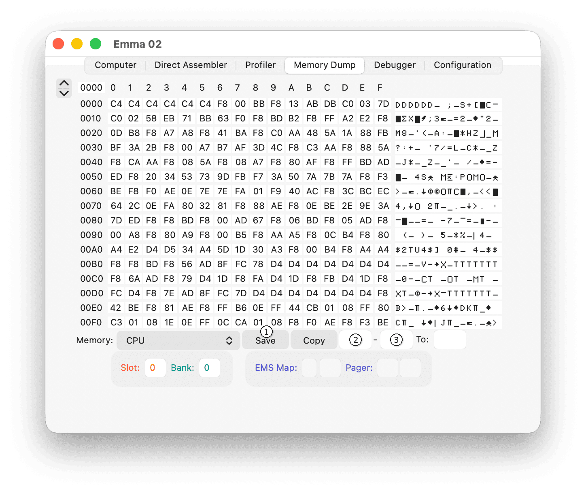

To save all or part of memory from the Memory Dump tab, use the Save button (1) shown below. The current selected memory type is saved.

For all types, the complete memory space is saved, i.e., 64K in CPU mode (assuming no start or end address is specified); for video and other modes the size depends on the configured memory size.
To save only part of CPU memory, specify the Start address (2) and End address (3).
To save in binary format, use file extension bin, rom, ram, cos, c8, ch8, c8x, ch10, or sc8. To save in Intel hex format, use file extension hex. Any other extension saves in text format (i.e., RCA Elf Emulator hex format).